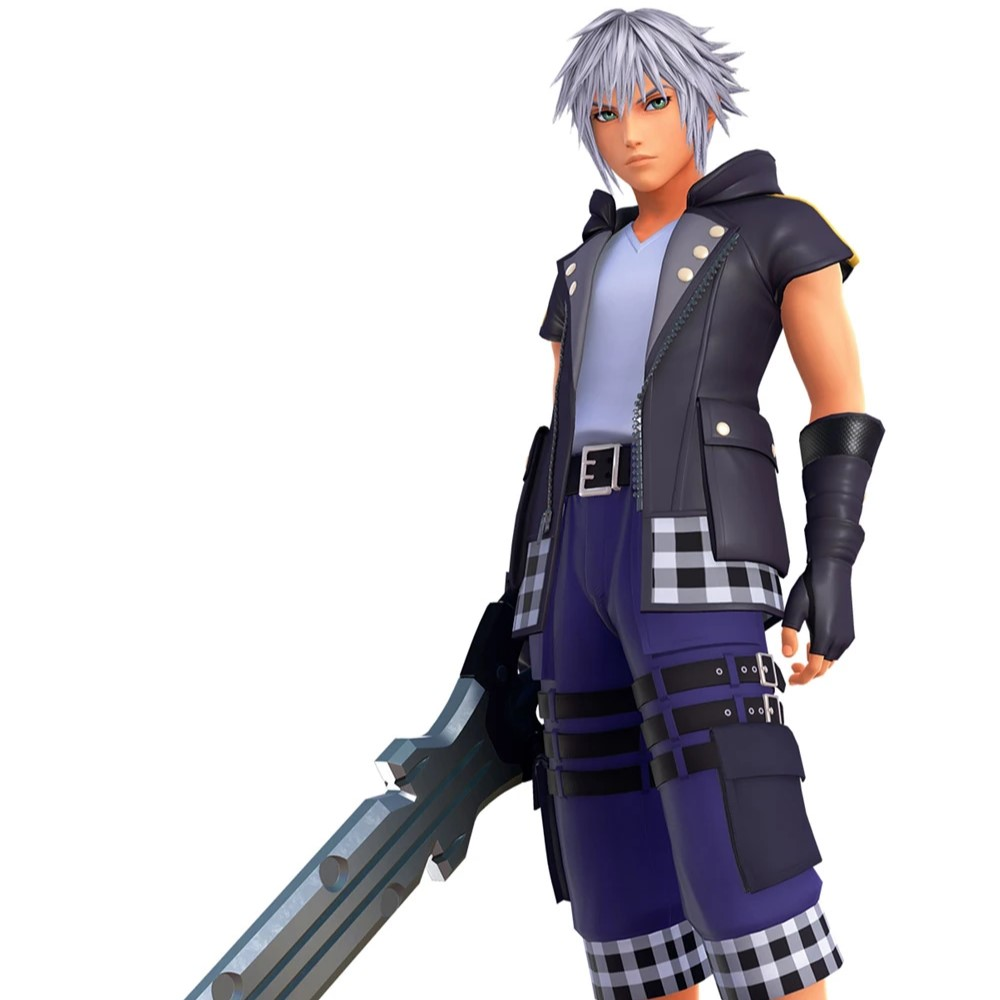
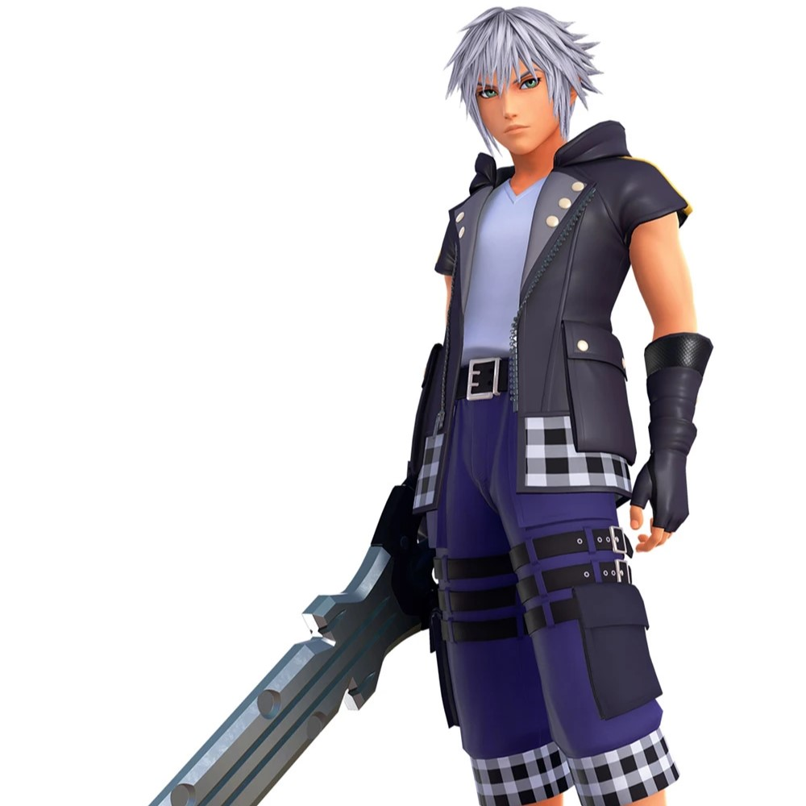

Yu Narukami
"People can do it. As long as they open their eyes and look around, they'll see it. They'll see the truth! If there is a fog, they just have to embrace the truth to get rid of it! This is what's right, and this is the path I choose to follow!"
First appearance: Persona 4: July 10, 2008
Yu Narukami is the protagonist of Persona 4, and the leader of The Investigation Team. He and his friends (The Investigation Team) solve a serial murder case together using the power of Persona (the manefestation of one's strength of heart)
His first name "Yu" means "Brave", "Leader", or "Gentle".
As a silent protagonist in his home game, he lacks the same characterization as some other characters, but that is remedied in the subsequent spin-offs that came out as a result of the original game's popularity. The spin-offs are where his canon personality comes from. He is potrayed as a strange mix between being calm or reserved, and being silly or ridicoulous. Overall he is a determined and loyal young man, but he has his moments of silliness and his sense of humor often comes across as dry and blunt. The characters sometimes have to guess whether or not he's being sarcastic or serious.
He is arguably overshadowed by the other two commonly known Persona protagonists (Makoto and Ren from Persona 3 and Persona 5 respectively), but he is a more down to earth hero than the others. Instead focusing more on the relationship or "bonds" with his friends.
He spends his time hanging out with his friends, reading in his room, or working a part time job. His talents include cooking, translating, and even dancing!


Link
Hyah!" "AAAAAAHHHHH" "Uuugggh" and other various grunts.
First appearance: The Legend of Zelda: February 21, 1986
Link is one of the most recognizable characters in video game history. The Legend of Zelda kickstarted the action adventure genre on home console, and Link alongside it, has become an icon of gaming.
He was given his name for how he served as the "Link" between the player and the game.
Link has always been the model "Hero". He is quiet and stoic (except when yelling, which he does alot), noble and strong, and is always willing to save the day regardless of the cost. Depending on the game, he bears the Triforce of Courage, the piece which he most embodies, with Zelda and Ganon bearing the Triforce of Wisdom and Power.
Link has had many different appearances over the years. From a being a young boy to looking like a full grown adult. There are many different reasons why Link could be returning every couple hundred years or so to defeat the same evil. Some think its reincarnation. Some think he's just named "Link" each time for the sake of convenience. There is also evidence that a lot of the "Links" are each decended from the same family line. But there are also Links that have no connection to the Heroes of the past.
Nintendo has left this open for intepretation.
Link's primary occupation is that of the adventurer and monster slayer.


 

Riku
"I've always wondered why we're here on this island. If there are other worlds out there, why did we end up on this one? And... suppose there are other worlds... then that means ours is just a little piece of something much greater."
First appearance: Kingdom Hearts: March 28, 2002
Riku is Sora's best friend, and at the same time, his rival. He is the Keyblade's original chosen one, but due to his tendency let the darkness in, the Keyblade instead chose Sora at the last minute. This put a strain on his friendship with Sora at first. They were even enemies in Kingdom Hearts 1, with Riku becoming Maleficent's puppet. All of this comes from him wanting to be strong enough to protect his friends. But his ambition led him down the wrong path at first.
"Riku" comes from the word for "land" in Japanese.
He eventually defeats the darkness in his heart and even becomes a full blown Keyblade master before Sora does. He takes a more backseat role compared to Sora's protagonist role. Serving as the protecter or rescuer type. During the time between Kingdom Hearts: Chain of Memories and Kingdom Hearts 2 he basically served as Sora's guard while he slept (In order to recover his memories), eliminating threats against Sora returning.
He sees his role as his redemption from the acts of his past.
As one of the Guardians of Light, Riku spends his time venturing to other worlds, defeating the Heartless and keeping the darkness away.